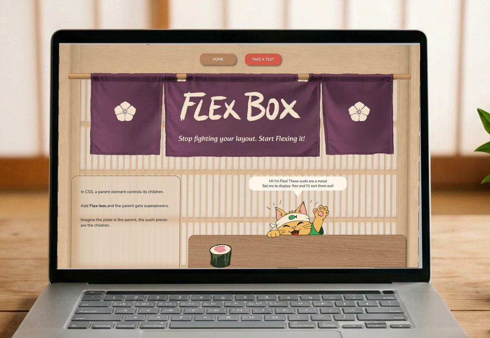
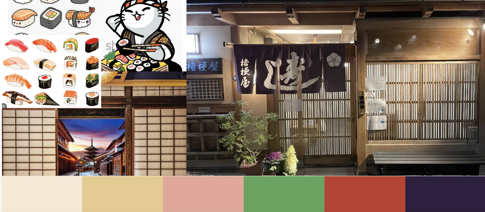
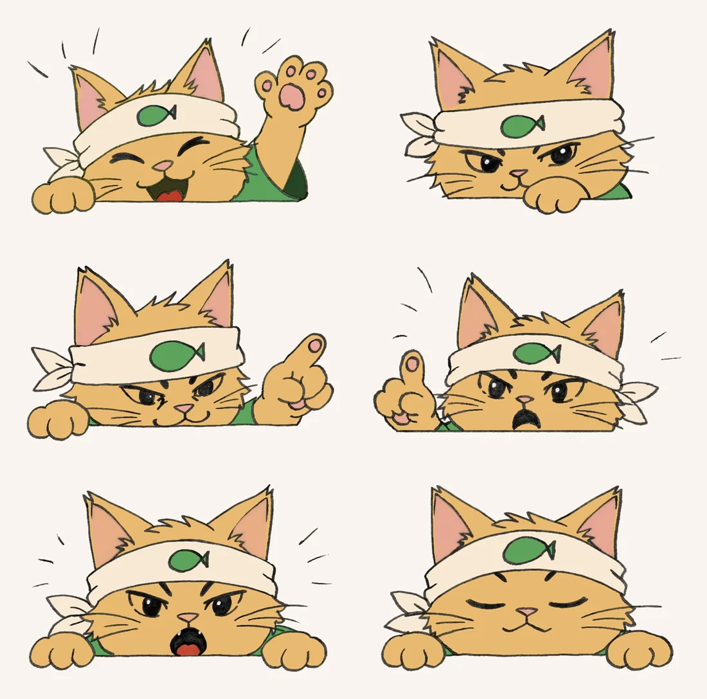
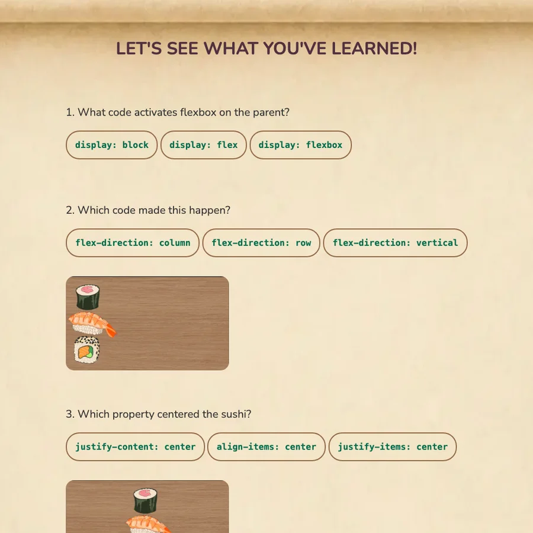
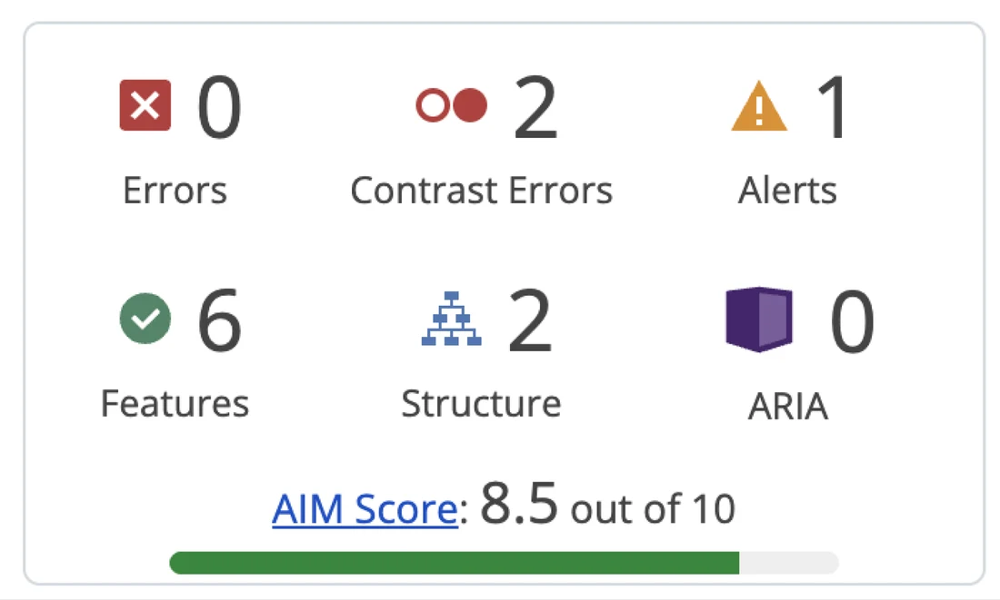

Illustration · Design · Code
A browser game that teaches CSS flexbox by running a sushi restaurant.

Find a way to teach CSS flexbox through a website. Flexbox is normally taught as a list of properties, which is why it does not stick, and it is dry enough that people give up before they get it. So the first decision was not technical: it needed a style people would actually want to spend time in.
I pulled it from Japanese sushi restaurants: the noren curtain in the doorway, shoji screens, warm wood, and the plates themselves. That gave me a palette and a setting before I drew a single screen, and it gave the lesson somewhere to happen.


A lesson with a character in it stops feeling like a manual and starts feeling like a game. It also sticks: people forget a property name, but they remember the cat who showed them. So I hand-drew him a pose for every property, and he carries the whole lesson.
This is the part that makes it work. A flex container is abstract until it is a plate, and the children are abstract until they are pieces of sushi. Change a property and the food moves, so you see what the rule does instead of reading what it means.
A lesson you cannot check is just reading. The site finishes on a hanging scroll: the same plates, the code taken away, and you pick the rule that produced the layout. It is the difference between having read about flexbox and knowing whether you can use it.


Run through WAVE: zero errors, zero ARIA problems, 8.5 out of 10. The two contrast flags sit on the hand-lettered curtain. On a site whose entire job is explaining something clearly, it would have been strange not to test whether everyone can actually read it.